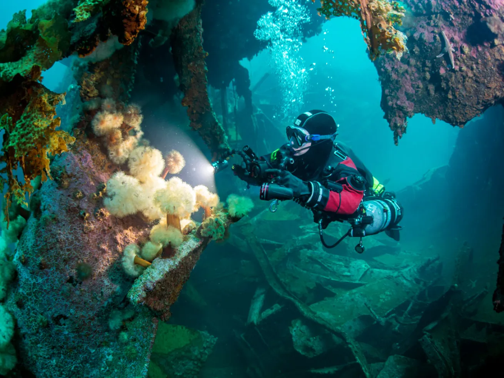
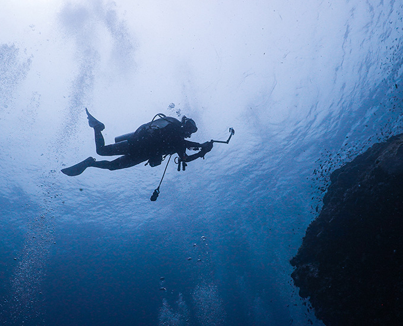

Overview
Canada offers world-class cold-water diving, featuring pristine shipwrecks in Ontario's Great Lakes, vibrant marine life in British Columbia, and unique iceberg dives in Newfoundland. Top spots include Tobermory's wrecks, Port Hardy's, BC, nutrient-rich currents, and the Thousand Islands' sunken history. Drysuits are generally recommended.
Top Featured Destinations
Experience Highlights

Tobermory Shipwreck Diving
Explore over 20 accessible wrecks in Tobermory, Ontario, including the famous SS City of Milwaukee and the Sweepstakes.

Port Hardy Marine Life
Dive in Port Hardy, BC, to see giant Pacific octopuses, wolf eels, and vibrant rockfish in nutrient-rich waters.

Newfoundland Iceberg Dives
Experience diving among icebergs in Newfoundland for a truly unforgettable underwater adventure.

Thousand Islands Wrecks
Dive in the Thousand Islands, Ontario, to explore historic shipwrecks like the General Brock and the Aloha.
Why choose Aqua Diving?
- Expert Guides: Our experienced dive guides are knowledgeable about local dive sites and marine life, ensuring a safe and enjoyable experience.
- Customized Packages: We offer tailored diving packages to suit your preferences, whether you're looking for a weekend getaway or an extended diving adventure.
- Top-Quality Equipment: We provide high-quality diving gear to ensure your comfort and safety underwater.
- Environmental Commitment: We are dedicated to preserving the natural beauty of our dive sites through sustainable practices and conservation efforts.
Pricing
Guided Dive
✔️ Guided by experienced local experts
✔️ Safety-focused
✔️ Access to top dive sites
✔️ Suitable for all skill levels
✔️ Equipment provided
Price: $120/hour per person
Discounts: discount available for group bookings (at least 5 adults): 10% off for students and 15% off for seniors (60+)
3-hour Training Course
✔️ Structured lessons with certified instructors
✔️ Ideal for beginners and those advancing certification
✔️ Supportive group environment
✔️ Equipment provided
Price: $60 per person (group class of 10)
Discounts: discount available for group bookings (at least 5 adults): 10% off for students (valid ID required)
3-Day Immersive All-Inclusive Package
✔️ Fully planned 3-day diving adventure
✔️ Includes guided dives, accommodation, meals, equipment, and transportation
✔️ Perfect for a seamless and unforgettable experience
Price: $1500 including all taxes and fees: accommodations included
Discounts: seasonal discounts available
Custom Package
✔️ Personalized diving experience tailored to your schedule, skill level, and interests
✔️ Flexible options for short getaways or extended trips
✔️ Designed to create the perfect diving adventure for you
Price: Contact us for a quote